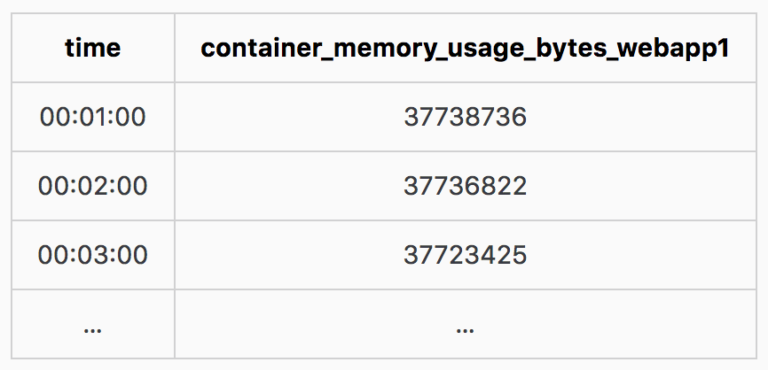

Prometheus是一款开源的系统监控和告警工具，最初由SoundCloud推出。自2012成立以来，许多公司和组织都采用了prometheus，项目有一个非常活跃的开发者和用户社区。Prometheus现在是一个独立的开源项目，它的维护独立于任何公司，2016年，Prometheus在Kubernetes之后第二个加入到 Cloud Native Computing Foundation 项目。
Features
Prometheus的主要特性有：
- 多维度数据模型（由键/值对确定的时间序列数据模型）
- 具有一个灵活的查询语言来利用这些维度
- 不依赖分布式存储；可单个服务器节点工作。
- 时间序列的采集是通过HTTP pull的形式，解决很多push架构的问题。
- 通过中介网关支持push形式时间序列数据的收集( pushing time series is supported via an intermediary gateway )
- 监控目标的发现是通过服务发现或静态配置( targets are discovered via service discovery or static configuration )
- 多种数据展示面板支持，例如grafana ( multiple modes of graphing and dashboarding support )
Architecture
This diagram illustrates the architecture of Prometheus and some of its ecosystem components:
Prometheus scrapes metrics from instrumented jobs, either directly or via an intermediary push gateway for short-lived jobs. It stores all scraped samples locally and runs rules over this data to either aggregate and record new time series from existing data or generate alerts. Grafana or other API consumers can be used to visualize the collected data.
Prometheus Server
Prometheus Server 负责从 Exporter 拉取和存储监控数据，并提供一套灵活的查询语言（PromQL）供用户使用。
Exporter
Exporter 负责收集目标对象（host, container…）的性能数据，并通过 HTTP 接口供 Prometheus Server 获取。
Push gateway
push gateway 用来支持 short-lived jobs
可视化组件
监控数据的可视化展现对于监控方案至关重要。以前 Prometheus 自己开发了一套工具，不过后来废弃了，因为开源社区出现了更为优秀的产品 Grafana。Grafana 能够与 Prometheus 无缝集成，提供完美的数据展示能力。
Alertmanager
用户可以定义基于监控数据的告警规则，规则会触发告警。一旦 Alermanager 收到告警，会通过预定义的方式发出告警通知。支持的方式包括 Email、PagerDuty、Webhook 等.
也许一些熟悉其他监控方案的同学看了 Prometheus 的架构会不以为然，“这些功能 Zabbix、Graphite、Nagios 这类监控系统也都有，没什么特别的啊！”。Prometheus 最大的亮点和先进性是它的多维数据模型，下面将做介绍。
多维数据模型
本节讨论 Prometheus 的核心，多维数据模型。我们先来看一个例子。
比如要监控容器webapp1的内存使用情况，最传统和典型的方法是定义一个指标container_memory_usage_bytes_webapp1来记录webapp1的内存使用数据。假如每1分钟取一次样，那么在数据库里就会有类似下面的记录。
如果现在需求发生了点变化，我们需要知道所有 webapp 容器的内存使用情况。如果还是采用前面的方法，就不得不增加新的指标container_memory_usage_bytes_webapp2、container_memory_usage_bytes_webapp3…
像 Graphite 这类监控方案采用了更为优雅的层次化数据模型。为了满足上面的需求，Graphite 会定义指标container.memory_usage_bytes.webapp1、container.memory_usage_bytes.webapp2、container.memory_usage_bytes.webapp3…
然后就可以用container.memory_usage_bytes.webapp*获取所有的 webapp 的内存使用数据。
此外，Graphite 还支持sum()等函数对指标进行计算和处理，比如sum(container.memory_usage_bytes.webapp*)可以得到所有 webapp 容器占用的总内存量。
目前为止问题处理得都很好。但客户总是会提出更多的需求：现在不仅要按容器名字统计内存使用量，还要按镜像来统计；或者想对比一下某一组容器在生产环境和测试环境中对内存使用的不同情况。
当然你可以说：只要定义更多的指标就能满足这些需求。比 如container.memory_usage_bytes.image1.webapp1、container.memory_usage_bytes.webapp1.prod等。
但问题在于我们没办法提前预知客户要用这些数据回答怎样的问题，所以我们没办法提前定义好所有的指标。
下面来看看 Prometheus 的解决方案。
Prometheus 只需要定义一个全局的指标container_memory_usage_bytes，然后通过添加不同的维度数据来满足不同的业务需求。
比如对于前面 webapp1 的三条取样数据，转换成 Prometheus 多维数据将变成：
后面三列container_name、image、env就是数据的三个维度。想象一下，如果不同env（prod、test、dev），不同image（mycom/webapp:1.2、mycom/webapp:1.3）的容器，它们的内存使用数据中标注了这三个维度信息，那么将能满足很多业务需求，比如：
计算 webapp2 的平均内存使用情况：avg(container_memory_usage_bytes{container_name=“webapp2”})
计算运行 mycom/webapp:1.3 镜像的所有容器内存使用总量：sum(container_memory_usage_bytes{image=“mycom/webapp:1.3”})
统计不同运行环境中 webapp 容器内存使用总量：sum(container_memory_usage_bytes{container_name=~“webapp”}) by (env)
这里只列了几个例子，不过已经能够说明 Prometheus 数据模型的优势了：
通过维度对数据进行说明，附加更多的业务信息，进而满足不同业务的需求。同时维度是可以动态添加的，比如再给数据加上一个
user维度，就可以按用户来统计容器内存使用量了。Prometheus 丰富的查询语言能够灵活、充分地挖掘数据的价值。前面示例中的 avg、sum、by 只是查询语言中很小的一部分功能，已经为我们展现了 Prometheus 对多维数据进行分片、聚合的强大能力。
基于Prometheus的容器监控部署
基于CAdvisor的exporter，Prometheus的部署使用docker-compose.yml文件将多个容器统一部署：
version: '2'
services:
prometheus:
image: prom/prometheus
volumes:
- ./prometheus/:/etc/prometheus/
- ./data/prometheus:/prometheus
command:
- '-config.file=/etc/prometheus/prometheus.yml'
- '-storage.local.path=/prometheus'
- '-alertmanager.url=http://alertmanager:9093'
- '-web.console.libraries=/usr/share/prometheus/console_libraries'
- '-web.console.templates=/usr/share/prometheus/consoles'
ports:
- 9090:9090
links:
- cadvisor:cadvisor
- alertmanager:alertmanager
depends_on:
- cadvisor
restart: always
node-exporter:
image: prom/node-exporter
volumes:
- /proc:/host/proc
- /sys:/host/sys
- /:/rootfs
command:
- '--path.procfs=/host/proc'
- '--path.sysfs=/host/sys'
- '--collector.filesystem.ignored-mount-points="^/(sys|proc|dev|host|etc)($$|/)"'
ports:
- 9100:9100
restart: always
alertmanager:
image: prom/alertmanager
ports:
- 9093:9093
volumes:
- ./alertmanager/:/etc/alertmanager/
restart: always
command:
- '-config.file=/etc/alertmanager/config.yml'
- '-storage.path=/alertmanager'
cadvisor:
image: google/cadvisor
volumes:
- /:/rootfs:ro
- /var/run:/var/run:rw
- /sys:/sys:ro
- /var/lib/docker/:/var/lib/docker:ro
ports:
- 8011:8080
restart: always
grafana:
image: grafana/grafana
depends_on:
- prometheus
ports:
- 3009:3000
volumes:
- ./data/grafana:/var/lib/grafana
env_file:
- config.monitoring
执行docker-compose up -d ，该方案采用的也是使用grafana作为可视化组件，可以在浏览器中通过访问http://localhost:3009 进入Grafana主页, 然后配置Prometheus的数据源，并导入一个docker-dashboard.json的dashboard模板，可以看到如下图的监控效果图：
参考资料
https://grafana.com/dashboards/179
https://grafana.com/dashboards/893
https://grafana.com/dashboards?dataSource=prometheus&search=docker